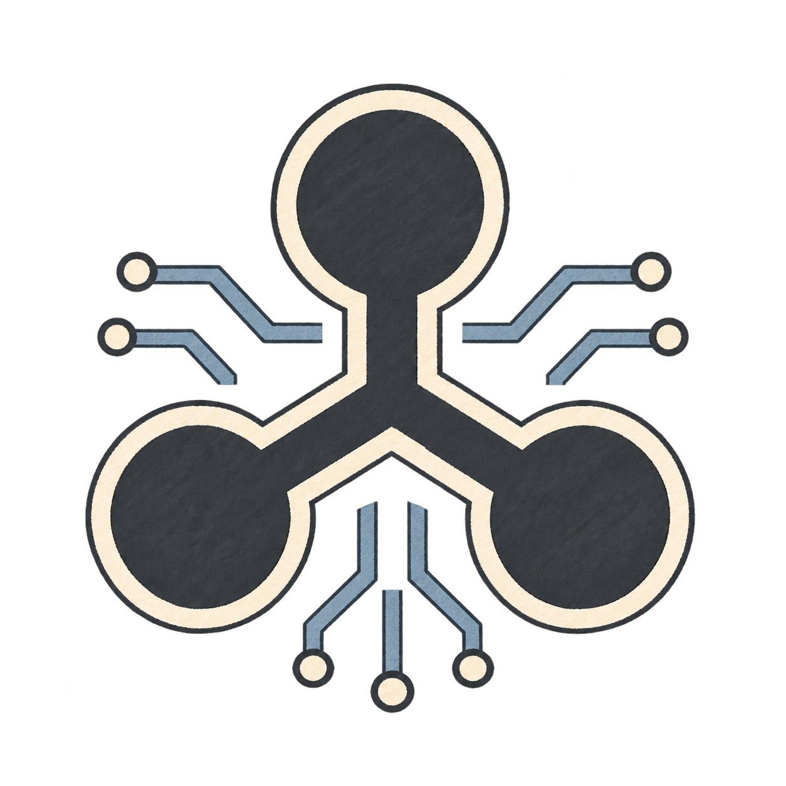

01 / 02
Plan a party
Start with an ordinary AI chat. Bring in help with the activities, costs and food as you need it. All in one application on one computer.
Read the storyGive your AI assistants different parts of one task. With NCF Agent Interconnect, they can exchange messages and files, work at the same time and coordinate their decisions.
Keep talking to each assistant, or ask one to coordinate the others and discuss everything with it. You can clarify requirements, add work and change direction as you go.
Start with an ordinary AI chat. Bring in help with the activities, costs and food as you need it. All in one application on one computer.
Read the storyDevelop a feature, review user requests and fix a bug. The assistants work in different AI applications and on different computers.
Read the story
The stories show two examples. The same exchange can help with documents, research, calculations and everyday tasks. You decide who does what and how the assistants work together.
One assistant gathers material, another prepares a calculation and a third checks the result. Each has a conversation with the details it needs. As work progresses, they can ask each other questions and use what is already ready.
Ask assistants to divide the work and tell each other about changes. They can agree on shared details, avoid doing the same work twice and notice when their decisions no longer fit together.
Give another assistant a document or calculation to check. It can discuss findings with the author, receive a revised version and check it again. You can join that conversation and decide when the result meets your needs.
If you discussed a relevant question with another assistant before, ask the team to contact it. That assistant can explain its earlier findings and share materials it still has. The new task gets a useful starting point.
Talk to each assistant directly, or ask one to coordinate the others. It can pass on your preferences, collect results and bring you questions that need your decision.
Add requirements, change priorities and bring in help for a separate task as you go. Assistants already at work can continue their parts with the updated decisions.
For a first exchange, two AI chats in one application on one computer are enough. Later, connect assistants in other AI applications if that is where the models, tools or materials you need are available.
NCF Agent Interconnect supports OpenCode v1, Codex Desktop, Cursor and AionUi with Cursor Agent. Assistants can also work on different computers on the same local network. Each keeps using the capabilities of its own application.
Application setup and differencesAssistants can send documents, lists, calculations and other files with their explanations. NCF Agent Interconnect keeps the history of their messages and received files, including across restarts.
In the settings and monitoring window, check connections and message delivery or open a local agent's messages and files. You can see what was shared and return to it later.
Settings, monitoring and history
Keep the essentials clear
Install NCF Agent Interconnect, choose the configuration file for your application, review the changes and click Apply. Reconnect MCP and check a message exchange.
Setup guideOpenCode v1, Codex Desktop, Cursor and AionUi with Cursor Agent have different delivery behavior and setup requirements.
Application detailsReview attachments, local history, the exact connected chat, name transfers and what deletion removes.
Settings and monitoringThe user guide and language-model reference explain the working steps and limits of NCF Agent Interconnect.
Open llms.txtStart with two chats
Install NCF Agent Interconnect, configure the connection for your chosen AI application, connect two chats under different names and ask one agent to contact the other.
macOS downloads are available as DMGs for Apple Silicon and Intel Mac; Windows uses an x64 EXE. macOS 13 or later is required. The Intel Mac package has not been run on Intel hardware. No Linux installer is published.